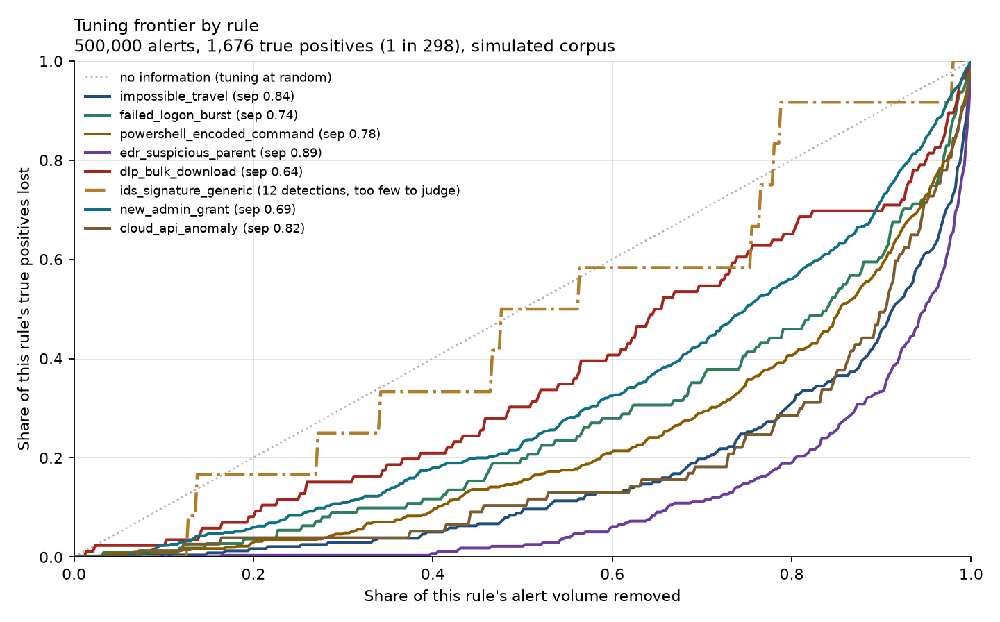
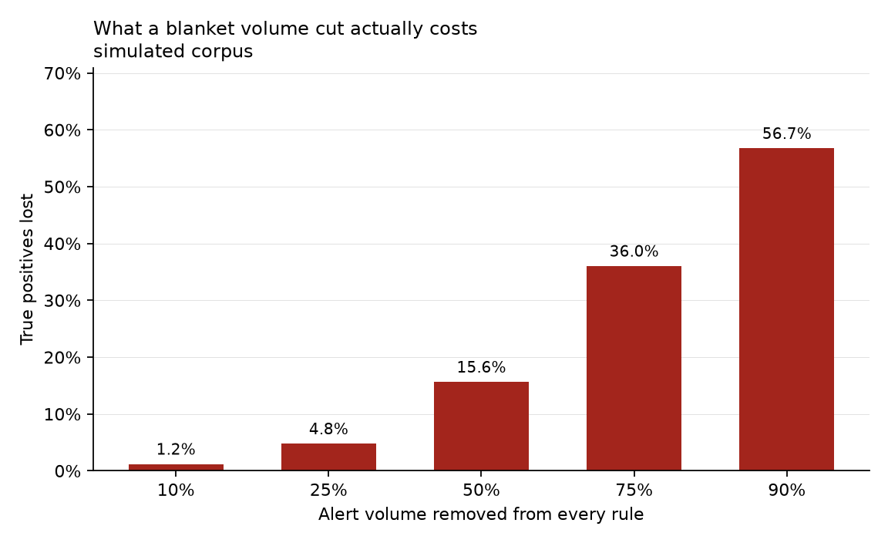

500,000 alerts, 1,676 true positives, one in 298. 8 rules analysed.
of true positives are lost if half of every rule's alert volume is removed. That is the number behind a claim like "we cut alert volume in half", which is usually reported without it.


| Rule | Alerts | True pos. | Separation | Removable free | Lost at 50% | Tunable |
|---|---|---|---|---|---|---|
impossible_travel |
104,981 | 238 |
0.836
[0.810, 0.860]
|
8.1%
[7.7, 19.5]
|
9.7% | yes |
failed_logon_burst |
89,871 | 111 |
0.740
[0.692, 0.787]
|
3.3%
[3.0, 18.9]
|
19.8% | yes |
powershell_encoded_command |
69,770 | 411 |
0.775
[0.754, 0.798]
|
2.7%
[2.5, 6.8]
|
15.3% | yes |
edr_suspicious_parent |
59,962 | 276 |
0.892
[0.874, 0.907]
|
16.5%
[15.9, 42.4]
|
2.2% | yes |
dlp_bulk_download |
55,553 | 86 |
0.641
[0.576, 0.698]
|
1.2%
[1.1, 14.0]
|
30.2% | yes |
ids_signature_generic |
44,928 | 12 |
0.536
[0.378, 0.691]
|
12.7%
[12.3, 33.7]
|
50.0% | unknown |
new_admin_grant |
40,250 | 465 |
0.692
[0.669, 0.716]
|
0.7%
[0.6, 8.1]
|
23.2% | yes |
cloud_api_anomaly |
34,685 | 77 |
0.822
[0.773, 0.866]
|
7.2%
[6.9, 37.5]
|
10.4% | yes |